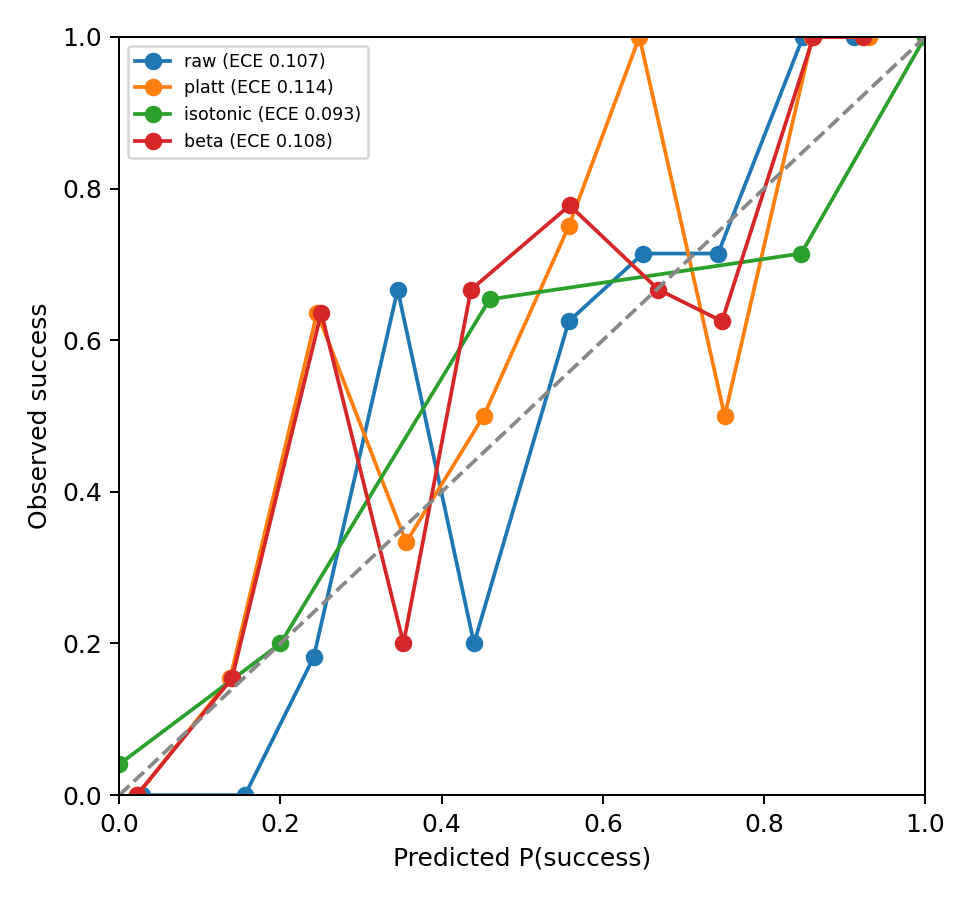
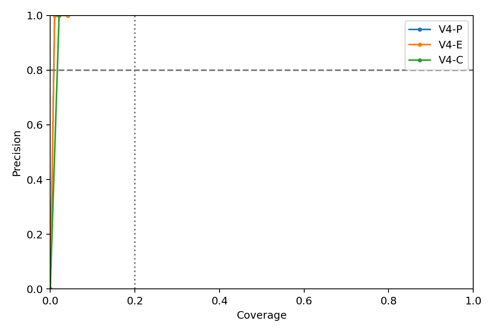
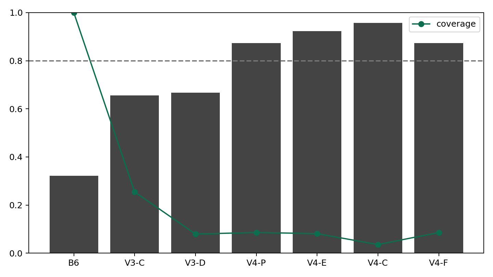
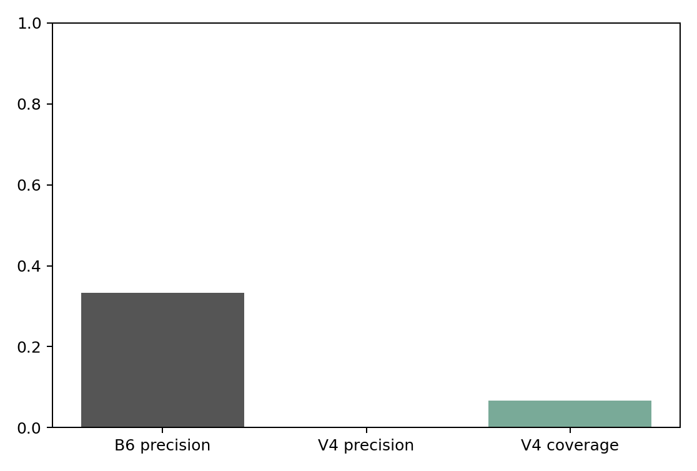
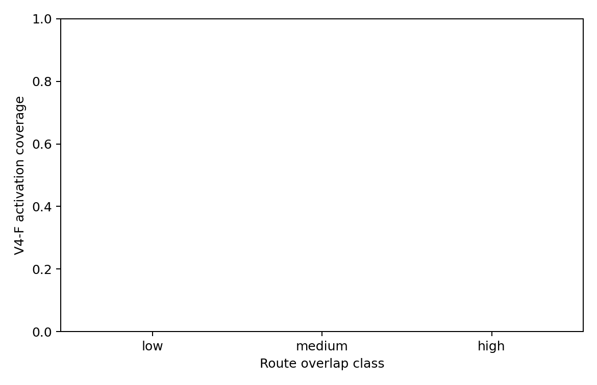
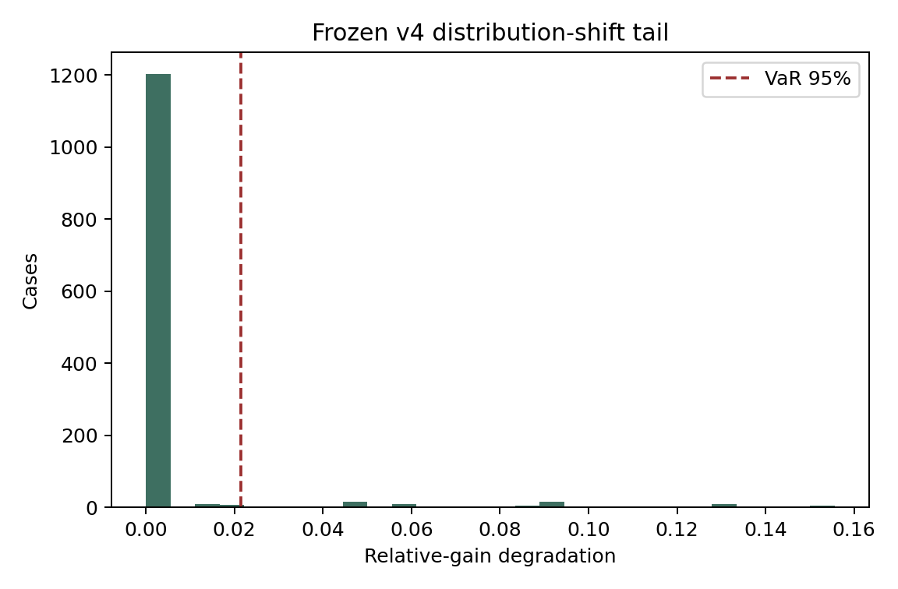

Estimate intervention success, traffic benefit, and safety risk separately; calibrate under distribution shift; then maximize coverage subject to a preregistered precision constraint.
Evidence boundary. Primary evidence is a new synthetic analytical holdout. Microscopic tests use actual SUMO with synthetic demand. OSM studies use real geometry with synthetic OD demand. Safety measures are surrogate conflicts, never crash probabilities. The new 640-case analytical holdout was never used for fitting or threshold selection. SUMO studies use actual microscopic simulation with synthetic demand. Real-topology results use committed OSM geometry with synthetic OD demand. RL is not used.
Precision 95% Wilson interval: [76.0%, 93.7%]. Safety, regret, and legal violation counts among interventions were 0, 0, and 0.
Robust CV selected M1_logistic using worst-group and lower-tail precision before coverage, ECE, and mean selected gain. CV worst-group precision was 0.0%; mean coverage was 46.6%. The probability calibrator was isotonic, with ECE 0.0927 against the preregistered 0.05 target. Benefit models were gradient_boosting and elastic_net_lcb. The calibration false-safe count for the conservative safety UCB was 0.
The frozen research candidate was V4-P. Deployment was blocked because no validation candidate jointly met precision ≥80% and coverage ≥15%. Validation-only H20 Coverage@Precision80 was 4.2% for ESIV and 4.2% for probability gating. H19 interaction coefficient/effect: {'approximate_ci95': [-0.46139326391821667, 1.1828913902942326], 'incremental_information': 0.0023993243488296123, 'interaction': 'heterogeneity_rad_interaction', 'standardized_coefficient': 0.36074906318800803, 'supports_H19': True, 'validation_log_loss_full': 0.39660987202540493, 'validation_log_loss_reduced': 0.39900919637423454}.
| Policy | Interventions | Precision | Coverage | Mean TTT gain |
|---|---|---|---|---|
| B1 | 0 | — | 0.0% | 0.00000 |
| B6 | 640 | 32.2% | 100.0% | -48.57231 |
| V3-C | 163 | 65.6% | 25.5% | 115.95693 |
| V3-D | 51 | 66.7% | 8.0% | 76.88295 |
| V4-C | 23 | 95.7% | 3.6% | 54.31434 |
| V4-E | 52 | 92.3% | 8.1% | 84.76777 |
| V4-F | 55 | 87.3% | 8.6% | 84.76777 |
| V4-P | 55 | 87.3% | 8.6% | 84.76777 |
Median activated-group precision was 89.7%; worst activated-group precision was 40.0%. A dash means the frozen policy made no intervention in that group.
| Dimension | Group | N intervention | Precision | Coverage |
|---|---|---|---|---|
| demand_band | high | 35 | 82.9% | 13.7% |
| demand_band | low | 11 | 100.0% | 8.6% |
| demand_band | middle | 9 | 88.9% | 3.5% |
| heterogeneity | bimodal | 23 | 82.6% | 14.4% |
| heterogeneity | high | 13 | 100.0% | 8.1% |
| heterogeneity | long_tail | 18 | 83.3% | 11.2% |
| heterogeneity | low | 1 | 100.0% | 0.6% |
| penetration | 0.5 | 10 | 40.0% | 3.1% |
| penetration | 1.0 | 45 | 97.8% | 14.1% |
| scenario | merge | 21 | 90.5% | 13.1% |
| scenario | ring | 0 | — | 0.0% |
| scenario | signalized | 18 | 77.8% | 11.2% |
| scenario | two_route | 16 | 93.8% | 10.0% |
| topology_family | constrained | 39 | 84.6% | 12.2% |
| topology_family | distributed | 16 | 93.8% | 5.0% |
The actual SUMO matrix contained 15 paired cases. V4-F made 1 intervention with precision 0.0% and 1 surrogate safety violation. This non-degenerate activation test failed; no microscopic adaptive-success or safety-transfer claim is made. Phantom-jam prediction remained secondary and was not a v4 gate.
The real-geometry study used 3 passenger-legal OD pairs spanning low, medium, and high route overlap. Demand is synthetic and the result is mechanism-transfer evidence, not a Seoul effect estimate.
| Overlap class | Interventions | Precision | Coverage |
|---|---|---|---|
| high | 0 | 0.0% | 0.0% |
| low | 0 | 0.0% | 0.0% |
| medium | 0 | 0.0% | 0.0% |
Across 1280 post-holdout stress cases, precision was 44.1%, coverage 17.2%, safety violations 0, and loss CVaR 0.00153. Model and thresholds remained immutable.






Outcome P — High-precision CONCORDIA partially supported.
Always-on adaptive navigation remains rejected as a universal policy.